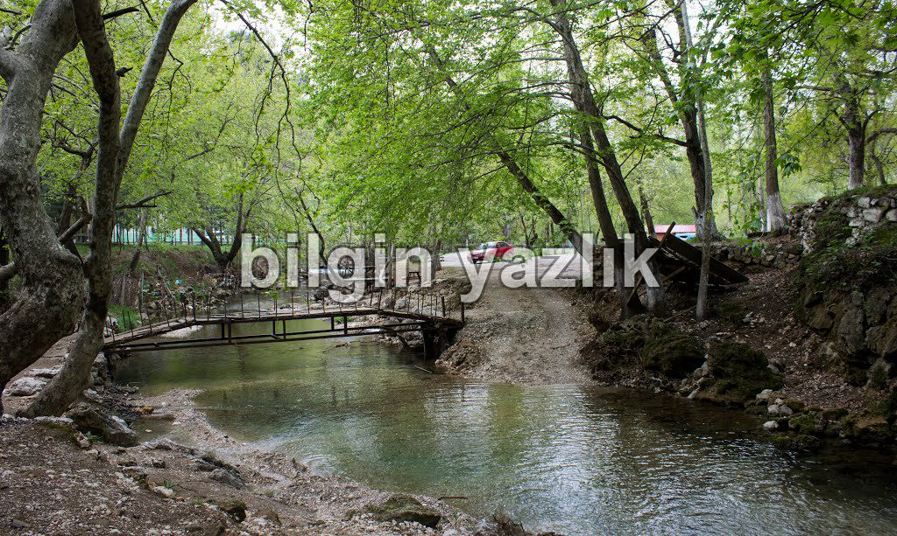

Maraş, Döngel Mağarası, Dondurmalı Baklava
Kayseri’den Maraş’a yaptığım seyahat notlarımı buradan paylaşacağım. Yolculuk 260 km sürüyor ve yol Tekir bölgesi haricinde tamamen duble. Yolun üzerinde çok sayıda tünel inşaatı tamamlanmış. Kayseri’den Pınarbaşı’na oradan Sarız’a daha sonra Göksun üzerinden Maraş’a varılıyor.
Pınarbaşı – Sarız arasında yer alan Kıskaçlı Et Lokantasından (Yolun sağında, kılıçkaya restoran) et şiş yemeyi ihmal etmeyin. Maraş’a 50 km mesafede Döngel Mağarası ve piknik alanı bulunuyor, mutlaka görülmesi gereken enfes bir tabiat harikası. Piknik yapabilir, mağaralardan doğup gelen buz gibi sudan içebilirsiniz, mağaralar ise devasa büyüklükte. Mağaralar piknik alanının yukarısında yer alıyor ve açıkçası çok da kolay bir ulaşım yolu bulunmuyor. Mağaraların içine girmek için ipe gereksinim duyuluyor, yürüyerek mağaraları gezmeniz mümkün değil.
Maraş’ta şehrin yukarı bölümünde yer alan Yeşilvadi Restoran’da yemek yedik, burada çocuk parkı bulunuyor ve restoran ormanın içerisine kurulmuş. Yemekten sonra Maraş’a gelmişken dondurmalı baklava yiyelim dedik, sorunca da en meşhur yerin Tatlıcı Yaşar olduğunu öğrendik, Mado’nun doğum yeri olan Tatlıcı Yaşar’dan mutlaka dondurmalı baklava yemelisiniz, bu tadın bir benzeri yok. Ayrılmadan önce seyahat sürenize göre üzerine kuru buz eklenmiş dondurmanızı almayı ihmal etmeyin sakın.

Bu yazı taliyol arşivinden taşınmıştır. · özgün kayıt